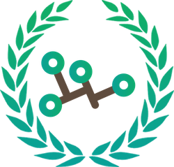

분류 : 나무위키
여러분이 가꾸어 나가는 지식의 나무
나무위키에 오신것을 환영합니다!
나무위키는 누구나 기여할 수 있는 위키입니다.
검증되지 않았거나 편향된 내용이 있을 수 있습니다.
{kind=link}

|
나무위키에 처음 오셨나요?먼저 나무위키의 규정과 CCL 위반 등 자주 하는 실수, 도움말을 확인해 보세요. |
나무위키 게시판공지 · 그루터기 · 문의 · 신고 · 편집 요청 · 차단 소명/해제 요청 · 다중 계정 검사 · 토론 문의 · 개발 문의 | |
|  |
권리침해 문의권리자의 임시조치 및 저작권 침해 관련 문의 방법이 권리침해 도움말에 설명되어 있습니다. |
중재 제도토론 중재 요청을 받고 있습니다. 게시판에서 요청하실 수 있습니다. |
|
운영진 지원 |
|
나무위키 프로젝트 |
|
|  | 프로젝트에 참여해서 관련 문서에 기여의 손길을 보내주세요! |
| 최근 개설된 프로젝트가 없습니다. | |
| 토막글 · 문서 작성 요청 · 작성이 필요한 문서 · 내용이 짧은 문서 · 내용이 긴 문서 · 프로젝트 목록 | |
| 나무위키의 규정 |
|
기본방침 (문서 관리 방침 · 토론 관리 방침 · 이용자 관리 방침) · 편집지침 ( 일반 문서 · 특수 문서 · 특정 분야 / 창작물 · 등재 기준 · 표제어) |
| 나무위키의 도움말 |
|
FAQ · 도움말 ( 기능 · 편집 · 문법 /심화 · 토론 · 스킨 · 소명 · 권리침해 · 게시판) · 문서 삭제식 이동 · 더미 · 다른 위키와의 차이점 |
| 나무위키의 운영 |
|
관리자 · 중재자 · 역대 운영진 · 운영진 지원 · 운영 도움말 ( 관리 · 중재 · 권한) · 접근 제한 ( 문서 목록) · 운영회의 ( 시행규칙 · 안건 건의) · 임명 회의 ( 관리자 · 중재자) · 대문 기념일 ( 시행규칙) · 봇 리스트 · 투명성 보고서 |
| 나무위키의 기능 |
|
분류 · 게시판 · 엔진 ( 업데이트) · 통계 · 데이터베이스 덤프 · 연습장 · 내 문서함 · 문서 작성 요청 · 다중 토론 합의 |
| 나무위키의 분류 |
- 나무위키:편집지침/특수 문서에서 통계적 수치로 인물을 나누는 분류 금지 규정이 개정되었습니다. 해당 규정은 소급 적용됩니다. 변경 내용 보기
- 나무위키:편집지침/특수 문서에서 심리 유형 기준의 분류 생성 금지 규정이 개정되었습니다. 변경 내용 보기
- 나무위키:편집지침/특수 문서에서 아티스트들의 합작 작품 분류 생성 금지 규정이 개정되었습니다. 변경 내용 보기
- 나무위키:편집지침/특정 분야/창작물에서 애니메이션 프로필 표 이미지 삽입 관련 규정이 개정되었습니다. 변경 내용 보기
- 나무위키:편집지침/특정 분야에서 템플릿:한자 관련 규정이 개정되었습니다. 변경 내용 보기
- 나무위키:편집지침/일반 문서에서 날짜 서술 규정이 개정되었습니다. 변경 내용 보기
- 나무위키:편집지침/일반 문서에서 †(십자)' 표기 관련 규정이 개정되었습니다. 변경 내용 보기
주요 운영 알림
- 나무위키:편집지침/일반 문서에서 문제가 되는 서술에 "이해관계가 얽힌 서술" 추가에 관한 토론이 진행 중입니다.
- 나무위키:편집지침/특수 문서에서 순환성 분류 생성 금지 규정 신설에 관한 토론이 진행 중입니다.
최근 운영 토론

이 저작물은 CC BY-NC-SA 2.0 KR에 따라 이용할 수 있습니다. (단, 라이선스가 명시된 일부 문서 및 삽화 제외)
기여하신 문서의 저작권은 각 기여자에게 있으며, 각 기여자는 기여하신 부분의 저작권을 갖습니다.
나무위키는 백과사전이 아니며 검증되지 않았거나, 편향적이거나, 잘못된 서술이 있을 수 있습니다.
나무위키는 위키위키입니다. 여러분이 직접 문서를 고칠 수 있으며, 다른 사람의 의견을 원할 경우 직접 토론을 발제할 수 있습니다.